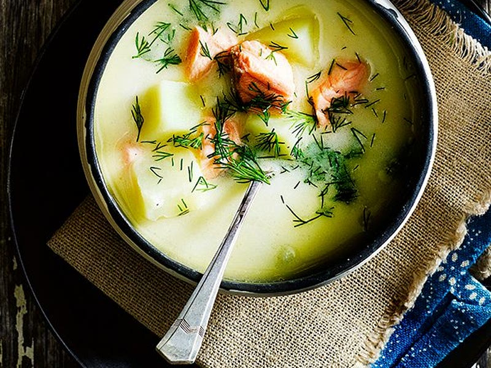
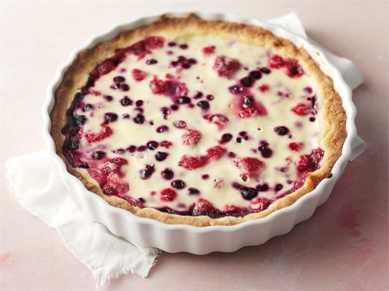
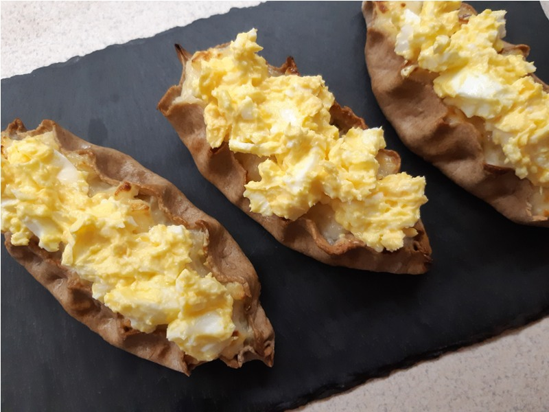
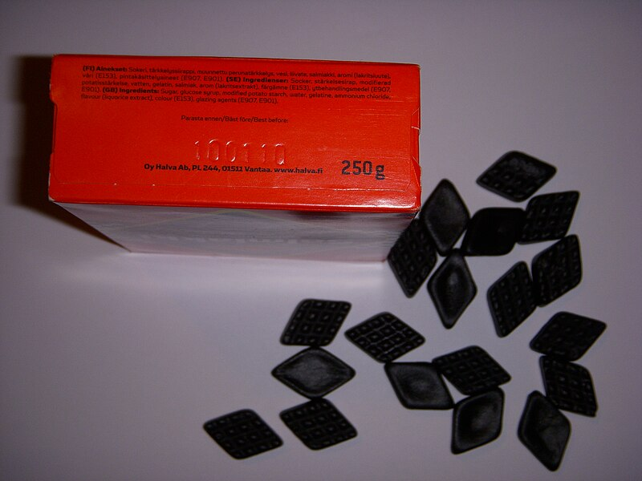
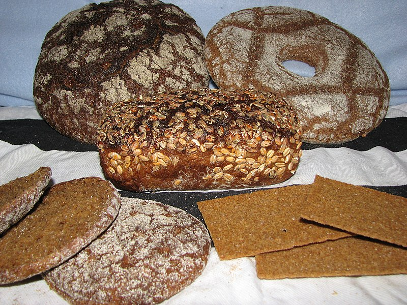
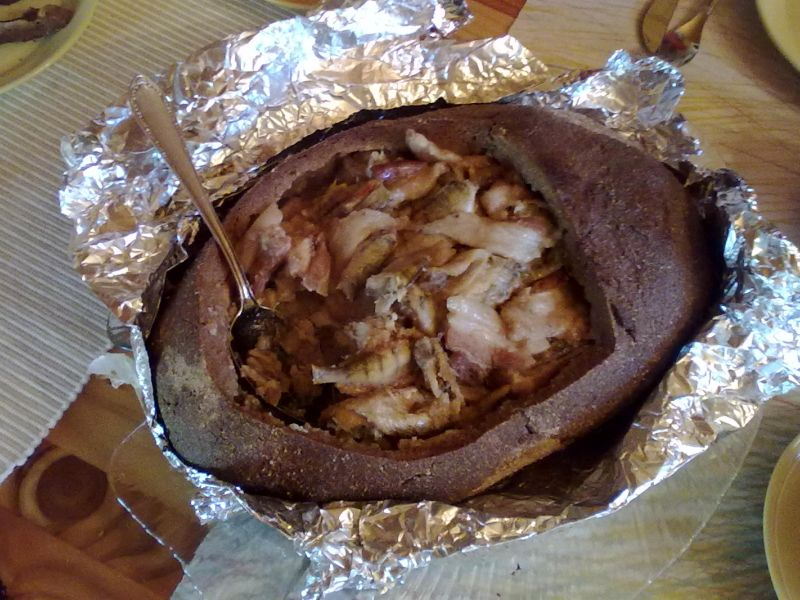

Lohikeitto
A creamy salmon soup made with lohi, which means salmon, and keitto, which means soup
Read More

Mustikkapiirakka
A Finnish blueberry pie that's made with Finlandia Unsalted Butter
Read More

Karjalanpiirakka
A pastry with a rye or wheat crust and a filling of rice or mashed potatoes
Read More

Salmiakki
A salty licorice flavored with sal ammoniac that's considered a part of Finnish national identity
Read More

Ruisleipä
A sourdough rye bread that was chosen as Finland's national food in 2017
Read More

Kalakukko
A local delicacy of salty vendace and fatty pork wrapped in a rye crust and baked in foil
Read More